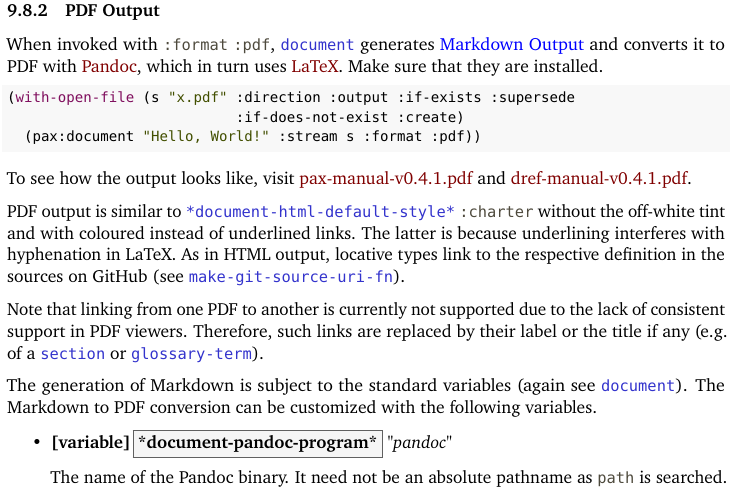
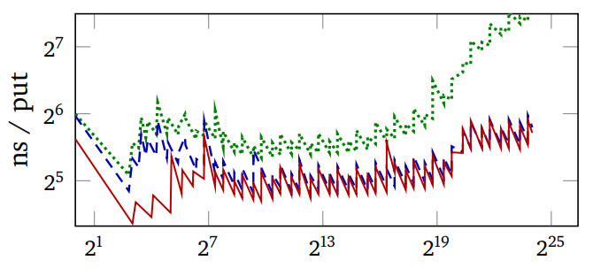
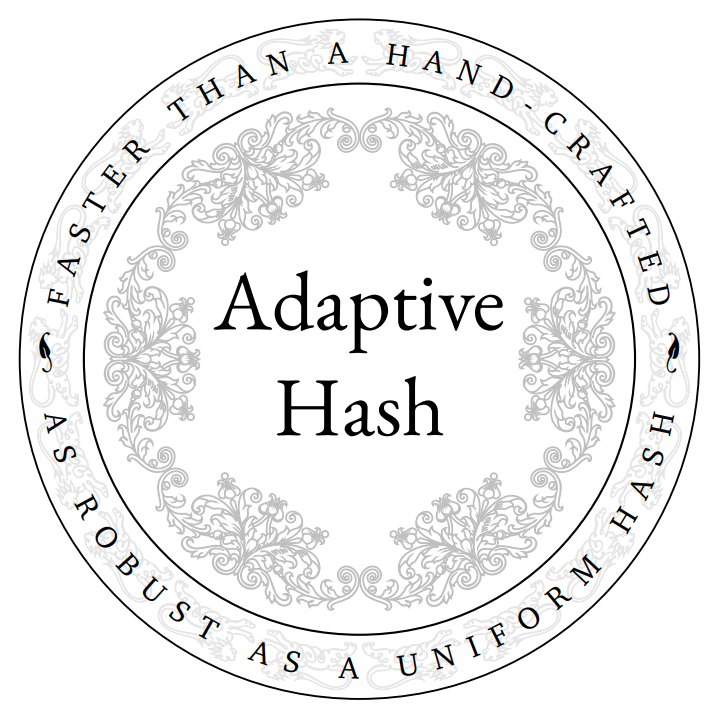

Untangling Literate Programming
Tags: tech, lisp, pompousness, Date: 2026-02-02
Classical literate programming
A literate program consists of interspersed narrative and code chunks. From this, source code to be fed to the compiler is generated by a process called tangling, and documentation by weaving. The specifics of tangling vary, but the important point is that this puts the human narrative first and allows complete reordering and textual combination of chunks at the cost of introducing an additional step into the write-compile-run cycle.
The general idea
It is easy to mistake this classical implementation of literate programming for the more general idea that we want to
present code to human readers in pedagogical order with narrative added, and
make changing code and its documentation together easy.
The advantages of literate programming follow from these desiderata.
Untangled LP
In many languages today, code order is far more flexible than in the era of early literate programming, so the narrative order can be approximated to some degree using docstrings and comments. Code and its documentation are side by side, so changing them together should also be easy. Since the normal source code now acts as the LP source, there is no more tangling in the programming loop. This is explored in more detail here.
Pros and cons
Having no tangling is a great benefit, as we get to keep our usual programming environment and tooling. On the other hand, bare-bones untangled LP suffers from the following potential problems.
Order mismatches: Things like inline functions and global variables may need to be defined before use. So, code order tends to deviate from narrative order to some degree.
Reduced locality: Our main tool to sync code and narrative is factoring out small, meaningful functions, which is just good programming style anyway. However, this may be undesirable for reasons of performance or readability. In such a case, we might end up with a larger function. Now, if we have only a single docstring for it, then it can be non-obvious which part of the code a sentence in the docstring refers to because of their distance and the presence of other parts.
No source code only view: Sometimes we want to see only the code. In classical LP, we can look at the tangled file. In untangled LP, editor support for hiding the narrative is the obvious solution.
No generated documentation: There is no more tangling nor weaving, but we still need another tool to generate documentation. Crucially, generating documentation is not in the main programming loop.
In general, whether classical or untangled LP is better depends on the severity of the above issues in the particular programming environment.
The Lisp and PAX view
MGL-PAX, a Common Lisp untangled LP solution, aims to minimize the above problems and fill in the gaps left by dropping tangling.
Order
Common Lisp is quite relaxed about the order of function definitions, but not so much about
DEFMACRO,DEFVAR,DEFPARAMETER,DEFCONSTANT,DEFTYPE,DEFCLASS,DEFSTRUCT,DEFINE-COMPILER-MACRO,SET-MACRO-CHARACTER,SET-DISPATCH-MACRO-CHARACTER,DEFPACKAGE. However, code order can for the most part follow narrative order. In practice, we end up with someDEFVARs far from their parentDEFSECTIONs (butDECLAIMSPECIALhelps).DEFSECTIONcontrols documentation order. The references to Lisp definitions inDEFSECTIONdetermine narrative order independently from the code order. This allows the few ordering problems to be patched over in the generated documentation.Furthermore, because
DEFSECTIONcan handle the exporting of symbols, we can declare the public interface piecemeal, right next to the relevant definitions, rather than in a monolithicDEFPACKAGE
Locality
Lisp macros replace chunks in the rare, complex cases where a chunk is not a straightforward text substitution but takes parameters. Unlike text-based LP chunks, macros must operate on valid syntax trees (S-expressions), so they cannot be used to inject arbitrary text fragments (e.g. an unclosed parenthesis).
This constraint forces us to organize code into meaningful, syntactic units rather than arbitrary textual fragments, which results in more robust code. Within these units, macros allow us to reshape the syntax tree directly, handling scoping properly where text interpolation would fail.
PAX's
NOTEis an extractable, named comment.NOTEcan interleave with code within e.g. functions to minimize the distance between the logic and its documentation.Also, PAX hooks into the development to provide easy navigation in the documentation tree.
Source code only view: PAX supports hiding verbose documentation (sections, docstrings, comments) in the editor.
Generating documentation
PAX extracts docstrings,
NOTEs and combines them with narrative glue inDEFSECTIONs.Documentation can be generated as static HTML/PDF files for offline reading or browsed live (in an Emacs buffer or via an in-built web server) during development.
LaTeX math is supported in both PDF and HTML (via MathJax, whether live or offline).
In summary, PAX accepts a minimal deviation in code/narrative order but retains the original, interactive Lisp environment (e.g. SLIME/Sly), through which it offers optional convenience features like extended navigation, live browsing, and hiding documentation in code. In return, we give up easy fine-grained control over typesetting the documentation – a price well worth paying in Common Lisp.
PAX PDF Output
Tags: tech, lisp, Date: 2025-05-15
Thanks to Paul A. Patience,
PAX now has PDF support. See
pax-manual-v0.4.1.pdf and
dref-manual-v0.4.1.pdf. The PDF is very similar
to the HTML, even down to the locative types (e.g
[function]) being linked to the sources on GitHub, but
cross-linking between PDFs doesn't work reliably on most viewers, so
that's disabled. Also, for reading PDFs so heavy on internal linking
to be enjoyable, one needs a viewer that supports going back within
the PDF (not the case with Chrome at the moment). Here is a blurry
screenshot to entice:

There is a bit of a Christmas tree effect due to syntax highlighting and the colouring of the links. Blue links are internal to the PDF, maroon links are external. I might want to change that to make it look more like the HTML, but I have not found a way on LaTeX to underline text without breaking automatic hyphenation.
Adaptive Hashing
Tags: tech, lisp, Date: 2025-05-02
At the 2024 ELS, I gave a talk on adaptive hashing, which focusses on making general purpose hash tables faster and more robust at the same time.
Theory vs Practice
Hash table theory most concerns itself with the asymptotic worst-case cost with a hash function chosen randomly from a family of hash functions. Although these results are very relevant in practice,
those pesky constant factors, that the big-O cost ignores, do matter, and
we don't pick hash functions randomly but fix the hash function for the lifetime of the hash table.
There are Perfect Hashing algorithms, that choose an optimal hash function for a given set of keys. The drawback is that they either require the set of keys to be fixed or they are too slow to be used as general purpose hash tables.
Still, the idea that we can do better by adapting the hash function to the actual keys is key. Can we do that online, that is, while the hash table is being used? Potential performance gains come from improving the constant factors mentioned above by
having fewer collisions, and

being more cache-friendly.

The first image above plots the regret (the expected number of
comparisons of per lookup minus the minimum achievable) and the
measured run-time of PUT operations vs the number of keys in the
hash table with a particular key distribution. Green is Murmur (a
robust hash function), Blue is SBCL's expedient EQ
hash. The wiggling of the graphs is due to the resizing of the hash
table as keys are added to it.
Note how SBCL's regret starts out much lower and becomes much higher than that of Murmur, but if anything, its advantage in run time (second image) grows.
Implementation
The general idea is sound, but turning it into real performance gains is hard due to the cost of choosing a hash function and switching to it. First, we have to make some assumption about the distribution of keys. In fact, default hash functions in language runtimes often make such assumptions to make the common cases faster, usually at the cost of weakened worst-case guarantees.
The rest of this post is about how SBCL's built-in hash tables, which had been reasonably fast, were modified. The core switching mechanism looks at
the length of the collision chain on PUT operations,
the collision count on rehash (when the hash table is grown), and
the size of the hash table.
Adapting EQ hash tables
Init to to constant hash function. This a fancy way of saying that we do linear search in a vector internally. This is an
EQhash table, so key comparison is as single assembly instruction.When the hash table is grown to more than 32 keys and it must be rehashed anyway, we switch to a hash function that does a single right shift with the number of bits to shift determined from the longest common run of low-bits in the keys.
If too many collisions, we switch to the previous default SBCL
EQ-hash function that has been tuned for a long time.If too many collisions, we switch to Murmur, a general purpose hash. We could also go all the way to cryptographic hashes.
In step 2, the hash function with the single shift fits the memory allocator's behaviour nicely: it is a perfect hash for keys forming arithmetic sequences, which is often approximately true for objects of the same type allocated in a loop.

In this figure, the red line is the adaptive hash.
Adapting EQUAL hash tables
For composite keys, running the hash function is the main cost. Adaptive hashing does the following.
For string keys, hash only the first and last 2 characters.
For list keys, only hash the first 4 elements.
If too many collisions, double the limit.

So, SBCL hash tables have been adaptive for almost a year now,
gaining some speed in common cases, and robustness in others.
The full paper is here.

PAX and DRef v0.4
Tags: tech, lisp, Date: 2025-04-23
Version 0.4 of PAX, the documentation system, and DRef, the definition reifier, was released. There were large refactorings, bug fixes, minor features, cosmetics, documentation and performance improvements too numerous to list.
... read the rest of PAX and DRef v0.4.
On Multifaceted Development and the Role of Documentation
Tags: tech, lisp, pompousness, Date: 2023-08-17
Catchy title, innit? I came up with it while trying to name the development style PAX enables. The original idea was something vaguely self-explanatory in a straight out of a marketing department kind of way, with tendrils right into your unconscious. Documentation-driven development sounded just the thing, but it's already taken. Luckily, I came to realize that neither documentation nor any other single thing should drive development. Less luckily for the philosophically disinclined, this epiphany unleashed my inner Richard P. Gabriel. I reckon if there is a point to what follows, it's abstract enough to make it hard to tell.
... read the rest of On Multifaceted Development and the Role of Documentation.
Try in Emacs
Tags: tech, lisp, Date: 2023-08-14
Try, my test anti-framework, has just got light Emacs integration.
... read the rest of Try in Emacs.
DRef and PAX v0.3
Tags: tech, lisp, Date: 2023-07-26
DEFSECTION needs to refer to definitions that do not create a
first-class object (e.g. stuff like (*DOCUMENT-LINK-TO-HYPERSPEC*
VARIABLE)), and since its original release in 2014, a substantial
part of PAX dealt with locatives and references, which reify
definitions. This release finally factors that code out into a
library called DRef, allowing PAX to focus on documentation. Being
very young, DRef lives under adult supervision, in a
subdirectory
of the PAX repository.
... read the rest of DRef and PAX v0.3.
PAX Live Documentation Browser
Tags: tech, lisp, Date: 2023-06-10
PAX got a live documentation browser to make documentation generation a more interactive experience. A great thing about Lisp development is changing a single function and quickly seeing how it behaves without the delay of a full recompile. Previously, editing a docstring required regenerating the full documentation to see how the changes turned out. The live documentation browser does away with this step, which tightens the edit/document loop.
PAX also got an apropos browser. It could always generate documentation for stuff not written with PAX in mind, so with the live browser already implemented, this was a just a small add-on.
The trouble with interactivity is, of course, that it's difficult to get the point across in text, so I made two short videos that demonstrate the basics.
Grid Typesetting
Tags: tech, Date: 2023-04-17
I put the sources of the Two-Tailed Averaging paper on github. Of course, the sources are also available on arxiv, but this may give better visibility to the LaTeX grid typesetting code in there. Also, note how much cleaner the paper looks with the XCharter font compared to Times New Roman. No wonder Matthew Butterick pushes Charter. By the way, see what he has to say about grids and baseline grids, in particular.
Normalize Fonts for Comparison
Tags: tech, Date: 2023-04-10
In short, comparing fonts at the same font size is almost never the right thing to do. Compare them at the same x-height or, better yet, at the same space usage.
... read the rest of Normalize Fonts for Comparison.
PAX v0.1
Tags: tech, lisp, Date: 2022-02-16
PAX v0.1 is released. At this point, I consider it fairly complete. Here is the changelog for the last year or so.
New Features
To reduce deployment size, made the MGL-PAX system autoload navigation, documentation generation, and transcription code.
Symbols in the CL package are linked to the hyperspec like this:
PRINT, which renders asPRINT.Hyperspec sections and issues can be linked to with the
CLHSlocative like this:[lambda lists][CLHS], which renders as lambda lists.Added support for
[see this][foo function]and[see this][foo]style of linking.Added
DECLARATIONlocative.
... read the rest of PAX v0.1.
Migration to Github
Tags: tech, Date: 2014-09-25
Due to the bash security hole that keeps giving, I had to disable gitweb at http://quotenil.com/git/ and move all non-obsolete code over to github. This affects:
Hung Connections
Tags: tech, Date: 2011-02-27
My ISP replaced a Thomson modem with a Cisco EPC3925 modem-router to fix the speed issue I was having. The good news is that the connection operates near its advertised bandwidth, the bad news is that tcp connections started to hang. It didn't take long to find out that this particular router drops "unused" tcp connections after five minutes.
... read the rest of Hung Connections.
OfflineIMAP with Encrypted Authinfo
Tags: tech, Date: 2011-02-26
I've moved to an OfflineIMAP +
Gnus setup that's outlined at
various
places.
Gnus can be configured to use
~/.authinfo as a
netrc style of file to read passwords from and can easily use
encrypted
authinfo
files as well. Offlineimap, on the other hand, offers no such
support, and passwords to the local and remote imap accounts are
normally stored in clear text in .offlineimaprc.
... read the rest of OfflineIMAP with Encrypted Authinfo.
Upgrade Woes 2
Tags: tech, Date: 2010-02-08
Debian Squeeze finally got Xorg 7.5 instead of the old and dusty 7.4. The upgrade was as smooth as ever: DPI is off, keyboard repeat for the Caps Lock key does not survive suspend/resume and the trackpoint stopped working. Synaptics click by tapping went away before the upgrade so that doesn't count.